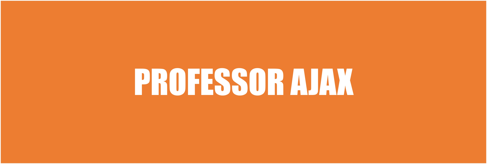

Professor Ajax

Python é uma linguagem de programação multiplataforma que permite desenvolver aplicações para games, desktops, web e dispositivos móveis. Além disso, ela pode se comunicar com outras aplicações que foram desenvolvidas em outras linguagens como C, C++, Java e C#. Nesse artigo serão vistos exemplos diversos de sintaxes básicas utilizando o Python.
Você já deve ter ouvido falar que Java é tanto uma linguagem quanto uma plataforma. Isso quer dizer que, além da linguagem, o programador Java também conta com um conjunto de APIs que facilitam o desenvolvimento ao oferecerem soluções para situações comuns de desenvolvimento.
C# é uma linguagem de programação criada pela Microsoft como parte da plataforma .NET. Com ela podemos criar desde aplicações web, desktop, mobile e também jogos eletrônicos.
Recentemente, a Microsoft adquiriu a fornecedora Revolution Analytics, que é líder de softwares e serviços para a linguagem de programação R de código aberto. O interesse da Microsoft em adquirir este serviço reflete o interesse da comunidade, de forma que a linguagem R tem sido popularizada com o passar dos anos.